01
Bupati
Dimas Syahrodi Hikmal S.
Lihat Tugas →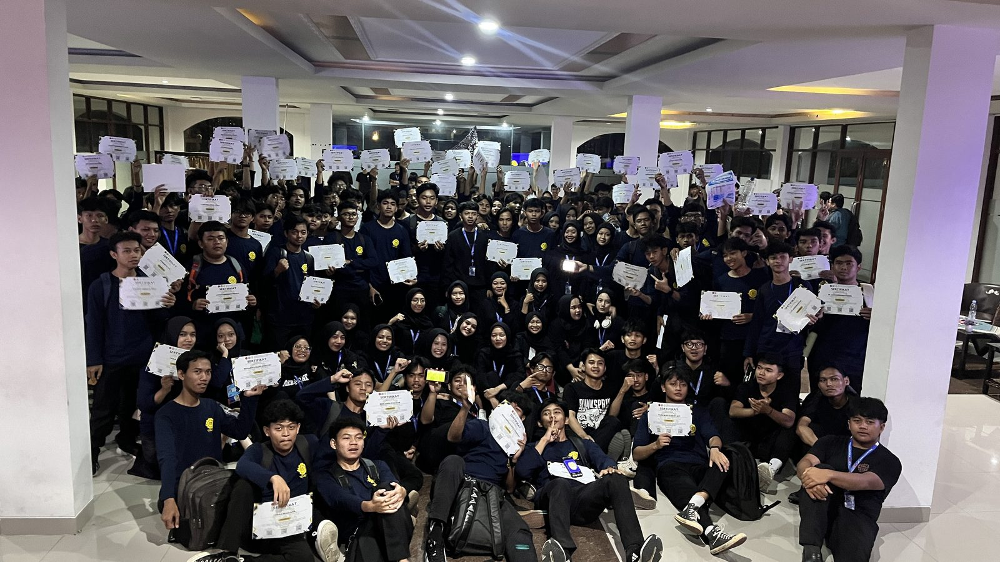
Himasantika · Universitas Muhammadiyah Cirebon
Organisasi kemahasiswaan tingkat jurusan yang menjadi sarana penyalur aspirasi mahasiswa serta memainkan peranan strategis dalam mengembangkan kemampuan akademis dan organisasi mahasiswa S1 Teknik Informatika.
Berdiri sejak 13 September 2012, Himasantika berkomitmen membina insan akademis, pencipta, dan pengabdi sebagai perwujudan Catur Dharma Perguruan Tinggi.
Himpunan Mahasiswa Jurusan Teknik Informatika atau HIMASANTIKA adalah organisasi kemahasiswaan tingkat jurusan di Universitas Muhammadiyah Cirebon yang berfungsi sebagai sarana penyalur aspirasi mahasiswa serta memainkan berbagai peranan strategis dalam mengembangkan kemampuan akademis dan organisasi.
HIMASANTIKA didirikan pada 13 September 2012, bertempat di Kampus 1 UMC, Jalan Tujuh Pahlawan Revolusi No. 70. Kami menaungi mahasiswa Program Studi S1 Teknik Informatika dan berstatus sebagai Lembaga Kooperatif di bawah Badan Eksekutif Mahasiswa Fakultas Teknik (BEM-FT) UMC.
Tujuan Kami: Terbinanya insan akademis, pencipta dan pengabdi sebagai perwujudan Catur Dharma Perguruan Tinggi serta sadar akan hak, kewajiban, dan tanggung jawabnya sebagai mahasiswa dan masyarakat Indonesia.
Pimpinan tertinggi Himasantika yang mengawasi, membimbing, dan menentukan arah gerak seluruh kegiatan organisasi.
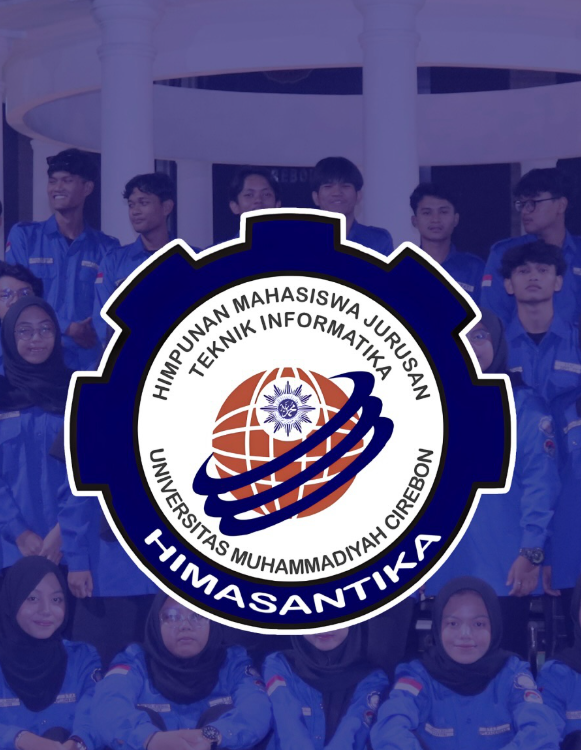
Dimas Syahrodi Hikmal S.
Lihat Tugas →Ayunadiva
Lihat Tugas →Cintya Putri
Lihat Tugas →Nazwa Salwalia
Lihat Tugas →Vanessa Tiara Aprillyan
Lihat Tugas →Anne Bela Firzinia N.
Lihat Tugas →Kami memiliki 6 Departemen dan 2 Lembaga yang menjalankan roda organisasi Himasantika, di bawah koordinasi Badan Pengurus Harian (BPH).
Menampung aspirasi mahasiswa dan mengkoordinasikannya dengan kaprodi S1 Teknik Informatika.
Lembaga Lihat Staff →Mengembangkan minat dan bakat profesi jurusan, serta menyalurkan mahasiswa ke berbagai perlombaan.
Lembaga Lihat Staff →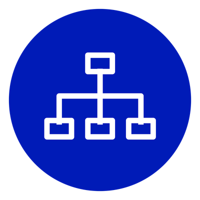
Mengumpulkan dan menyusun SOP kaderisasi, serta melaksanakan dan meningkatkan kualitas kaderisasi.
Departemen Lihat Staff →Pusat informasi dan komunikasi, mengelola media sosial, serta meliput dan mempublikasikan kegiatan.
Departemen Lihat Staff →Mengadakan evaluasi per departemen, kajian AD/ART, dan merancang SOP berpedoman pada AD/ART.
Departemen Lihat Staff →Koordinasi akademik dengan kaprodi, mengadakan workshop, seminar, dan bootcamp untuk mahasiswa.
Departemen Lihat Staff →Pengabdian masyarakat, kajian sosial, dan menjalin hubungan dengan ormawa serta PERMIKOMNAS.
Departemen Lihat Staff →Membangun relasi dengan mitra, menjadi badan usaha himpunan, dan pencarian dana yang halal.
Departemen Lihat Staff →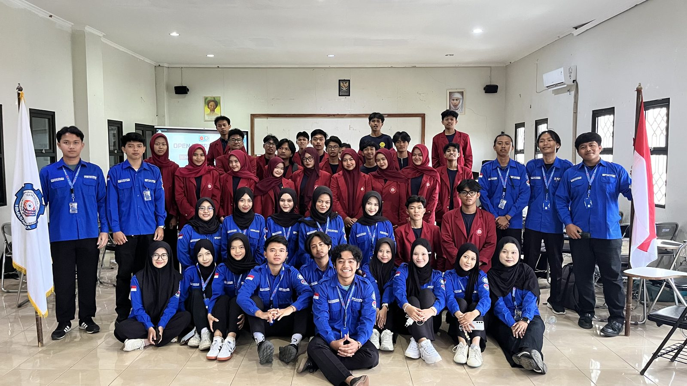
Pembukaan pendaftaran anggota baru Himasantika untuk periode kepengurusan terbaru.
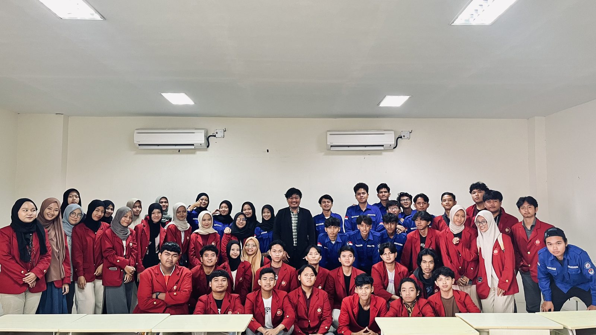
Mengasah kemampuan public speaking mahasiswa Teknik Informatika untuk siap berkarier.
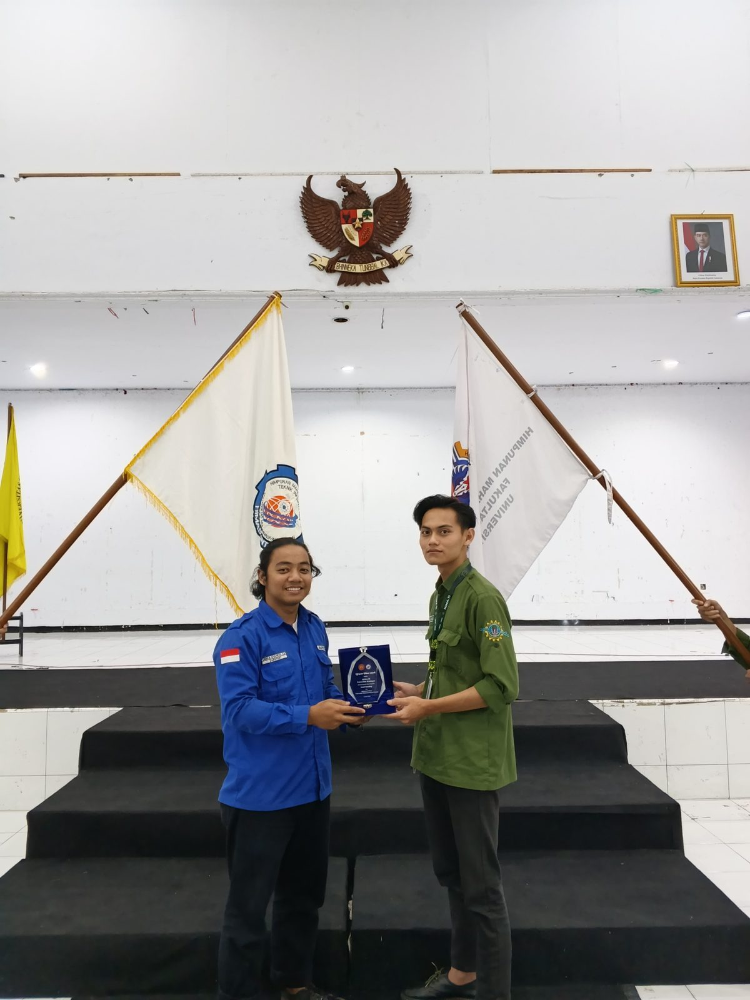
Kolaborasi dan pertukaran pengalaman organisasi antara Himasantika UMC dan HIMA-TI UNIKU.
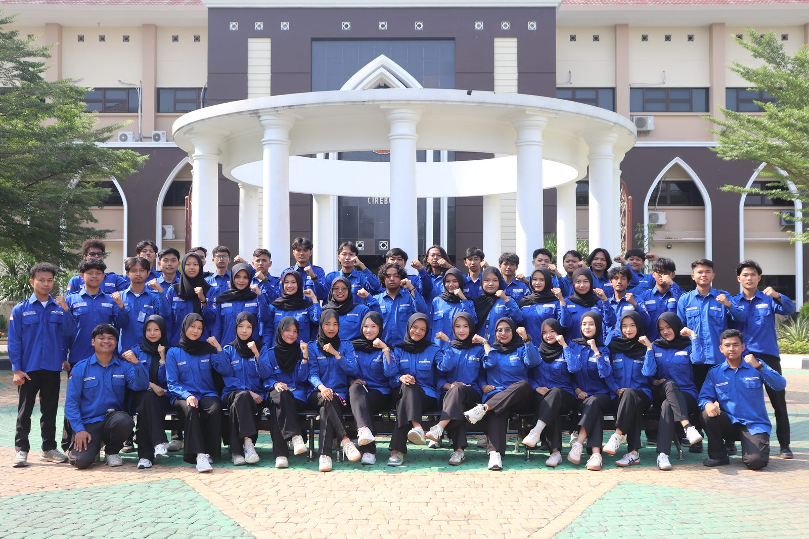
Dokumentasi resmi susunan pengurus Himasantika periode terbaru sebagai bentuk transparansi organisasi.
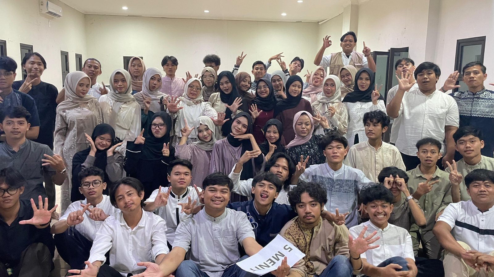
Buka bersama dan family gathering untuk mempererat kebersamaan keluarga besar Himasantika.
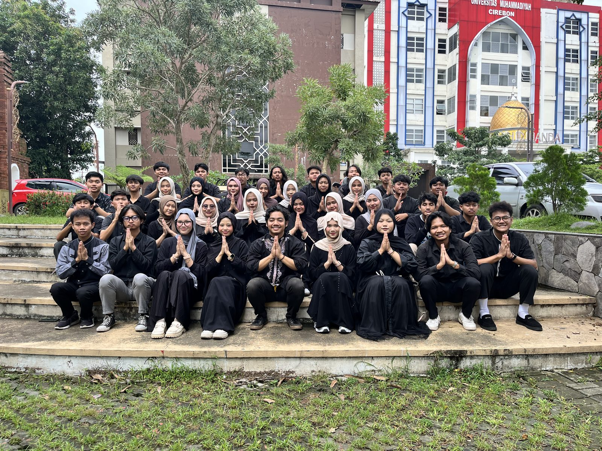
Foto bersama seluruh pengurus Himasantika dalam rangka menyambut bulan suci Ramadhan.
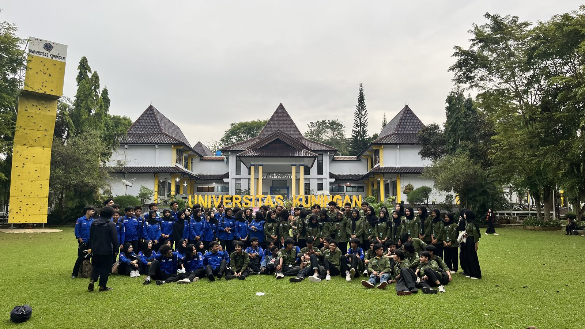
Diskusi dan berbagi praktik baik antara Himasantika UMC dengan HIMA-TI UNIKU.
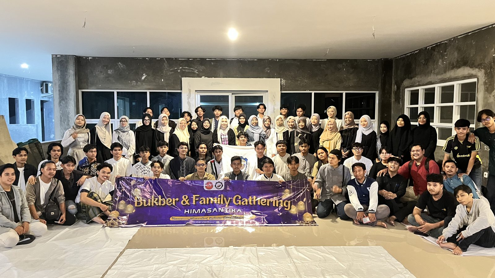
Momen hangat kebersamaan keluarga besar Himasantika saat buka bersama dan family gathering.
Jadi bagian dari keluarga besar Himpunan Mahasiswa Teknik Informatika UMC. Open recruitment dibuka setiap awal kepengurusan baru — gratis untuk seluruh mahasiswa S1 Teknik Informatika UMC.
Gratis untuk mahasiswa S1 Teknik Informatika UMC
Landasan dasar yang memandu setiap kegiatan dan pengambilan keputusan organisasi.
"Terbinanya insan akademis, pencipta dan pengabdi sebagai perwujudan Catur Dharma Perguruan Tinggi, serta sadar akan hak, kewajiban, dan tanggung jawabnya sebagai mahasiswa dan masyarakat Indonesia."
Kirim pesan Anda, tim Himasantika akan menghubungi secepatnya.
Email: himasantika@umc.ac.id
No. Telp: 0857-9548-3927
Alamat: Jl. Fatahillah No. 40 Watubelah, Sumber, Kab. Cirebon
Pesan terkirim!
Terima kasih, tim Himasantika akan menghubungi Anda secepatnya.